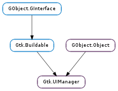

| Subclasses: | Anjuta.UI |
|---|
| static | new() |
| add_ui(merge_id, path, name, action, type, top) | |
| add_ui_from_file(filename) | |
| add_ui_from_resource(resource_path) | |
| add_ui_from_string(buffer) | |
| ensure_update() | |
| get_accel_group() | |
| get_action(path) | |
| get_action_groups() | |
| get_add_tearoffs() | |
| get_toplevels(types) | |
| get_ui() | |
| get_widget(path) | |
| insert_action_group(buffer[, length]) | |
| new_merge_id() | |
| remove_action_group(action_group) | |
| remove_ui(merge_id) | |
| set_add_tearoffs(add_tearoffs) |
| Name | Type | Flags | Description |
|---|---|---|---|
| add-tearoffs | bool | r/w | Whether tearoff menu items should be added to menus |
| ui | str | r | An XML string describing the merged UI |
| Name | Parameters | Return | Description |
|---|---|---|---|
| actions-changed | The ::actions-changed signal is emitted whenever the set of actions changes. | ||
| add-widget | Gtk.Widget | The ::add-widget signal is emitted for each generated menubar and toolbar. It is not emitted for generated popup menus, which can be obtained by Gtk.UIManager.get_widget (). | |
| connect-proxy | Gtk.Action, Gtk.Widget | The ::connect-proxy signal is emitted after connecting a proxy to an action in the group. This is intended for simple customizations for which a custom action class would be too clumsy, e.g. showing tooltips for menuitems in the statusbar. | |
| disconnect-proxy | Gtk.Action, Gtk.Widget | The ::disconnect-proxy signal is emitted after disconnecting a proxy from an action in the group. | |
| post-activate | Gtk.Action | The ::post-activate signal is emitted just after the action is activated. This is intended for applications to get notification just after any action is activated. | |
| pre-activate | Gtk.Action | The ::pre-activate signal is emitted just before the action is activated. This is intended for applications to get notification just before any action is activated. |
| Name | Type | Access |
|---|---|---|
| parent | GObject.Object | r |
Bases: GObject.Object, Gtk.Buildable
A Gtk.UIManager constructs a user interface (menus and toolbars) from one or more UI definitions, which reference actions from one or more action groups.
UI Definitions
The UI definitions are specified in an XML format which can be roughly described by the following DTD.
Do not confuse the Gtk.UIManager UI Definitions described here with the similarly named Gtk.Builder UI Definitions.
<!ELEMENT ui (menubar|toolbar|popup|accelerator)* >
<!ELEMENT menubar (menuitem|separator|placeholder|menu)* >
<!ELEMENT menu (menuitem|separator|placeholder|menu)* >
<!ELEMENT popup (menuitem|separator|placeholder|menu)* >
<!ELEMENT toolbar (toolitem|separator|placeholder)* >
<!ELEMENT placeholder (menuitem|toolitem|separator|placeholder|menu)* >
<!ELEMENT menuitem EMPTY >
<!ELEMENT toolitem (menu?) >
<!ELEMENT separator EMPTY >
<!ELEMENT accelerator EMPTY >
<!ATTLIST menubar name #IMPLIED
action #IMPLIED >
<!ATTLIST toolbar name #IMPLIED
action #IMPLIED >
<!ATTLIST popup name #IMPLIED
action #IMPLIED
accelerators (true|false) #IMPLIED >
<!ATTLIST placeholder name #IMPLIED
action #IMPLIED >
<!ATTLIST separator name #IMPLIED
action #IMPLIED
expand (true|false) #IMPLIED >
<!ATTLIST menu name #IMPLIED
action #REQUIRED
position (top|bot) #IMPLIED >
<!ATTLIST menuitem name #IMPLIED
action #REQUIRED
position (top|bot) #IMPLIED
always-show-image (true|false) #IMPLIED >
<!ATTLIST toolitem name #IMPLIED
action #REQUIRED
position (top|bot) #IMPLIED >
<!ATTLIST accelerator name #IMPLIED
action #REQUIRED >
There are some additional restrictions beyond those specified in the DTD, e.g. every toolitem must have a toolbar in its anchestry and every menuitem must have a menubar or popup in its anchestry. Since a #GMarkup parser is used to parse the UI description, it must not only be valid XML, but valid #GMarkup.
If a name is not specified, it defaults to the action. If an action is not specified either, the element name is used. The name and action attributes must not contain ‘/’ characters after parsing (since that would mess up path lookup) and must be usable as XML attributes when enclosed in doublequotes, thus they must not ‘”’ characters or references to the ” entity.
A UI definition
<ui>
<menubar>
<menu name="FileMenu" action="FileMenuAction">
<menuitem name="New" action="New2Action" />
<placeholder name="FileMenuAdditions" />
</menu>
<menu name="JustifyMenu" action="JustifyMenuAction">
<menuitem name="Left" action="justify-left" />
<menuitem name="Centre" action="justify-center" />
<menuitem name="Right" action="justify-right" />
<menuitem name="Fill" action="justify-fill" />
</menu>
</menubar>
<toolbar action="toolbar1">
<placeholder name="JustifyToolItems">
<separator />
<toolitem name="Left" action="justify-left" />
<toolitem name="Centre" action="justify-center" />
<toolitem name="Right" action="justify-right" />
<toolitem name="Fill" action="justify-fill" />
<separator />
</placeholder>
</toolbar>
</ui>
The constructed widget hierarchy is very similar to the element tree of the XML, with the exception that placeholders are merged into their parents. The correspondence of XML elements to widgets should be almost obvious:
The “position” attribute determines where a constructed widget is positioned wrt. to its siblings in the partially constructed tree. If it is “top”, the widget is prepended, otherwise it is appended.
UI Merging
The most remarkable feature of Gtk.UIManager is that it can overlay a set of menuitems and toolitems over another one, and demerge them later.
Merging is done based on the names of the XML elements. Each element is identified by a path which consists of the names of its anchestors, separated by slashes. For example, the menuitem named “Left” in the example above has the path /ui/menubar/JustifyMenu/Left and the toolitem with the same name has path /ui/toolbar1/JustifyToolItems/Left.
Accelerators
Every action has an accelerator path. Accelerators are installed together with menuitem proxies, but they can also be explicitly added with <accelerator> elements in the UI definition. This makes it possible to have accelerators for actions even if they have no visible proxies.
Smart Separators
The separators created by Gtk.UIManager are “smart”, i.e. they do not show up in the UI unless they end up between two visible menu or tool items. Separators which are located at the very beginning or end of the menu or toolbar containing them, or multiple separators next to each other, are hidden. This is a useful feature, since the merging of UI elements from multiple sources can make it hard or impossible to determine in advance whether a separator will end up in such an unfortunate position.
For separators in toolbars, you can set expand="true" to turn them from a small, visible separator to an expanding, invisible one. Toolitems following an expanding separator are effectively right-aligned.
Empty Menus
Submenus pose similar problems to separators inconnection with merging. It is impossible to know in advance whether they will end up empty after merging. Gtk.UIManager offers two ways to treat empty submenus:
The behaviour is chosen based on the “hide_if_empty” property of the action to which the submenu is associated.
Gtk.UIManager as Gtk.Buildable
The Gtk.UIManager implementation of the Gtk.Buildable interface accepts Gtk.ActionGroup objects as <child> elements in UI definitions.
A Gtk.UIManager UI definition as described above can be embedded in an Gtk.UIManager <object> element in a Gtk.Builder UI definition.
The widgets that are constructed by a Gtk.UIManager can be embedded in other parts of the constructed user interface with the help of the “constructor” attribute. See the example below.
An embedded Gtk.UIManager UI definition
<object class="GtkUIManager" id="uiman">
<child>
<object class="GtkActionGroup" id="actiongroup">
<child>
<object class="GtkAction" id="file">
<property name="label">_File</property>
</object>
</child>
</object>
</child>
<ui>
<menubar name="menubar1">
<menu action="file">
</menu>
</menubar>
</ui>
</object>
<object class="GtkWindow" id="main-window">
<child>
<object class="GtkMenuBar" id="menubar1" constructor="uiman" />
</child>
</object>
| Returns: | a new ui manager object. |
|---|---|
| Return type: | Gtk.UIManager |
Creates a new ui manager object.
| Parameters: |
|
|---|
Adds a UI element to the current contents of manager.
If type is Gtk.UIManagerItemType.AUTO, GTK+ inserts a menuitem, toolitem or separator if such an element can be inserted at the place determined by path. Otherwise type must indicate an element that can be inserted at the place determined by path.
If path points to a menuitem or toolitem, the new element will be inserted before or after this item, depending on top.
| Parameters: | filename (str) – the name of the file to parse |
|---|---|
| Raises: | GLib.GError |
| Returns: | The merge id for the merged UI. The merge id can be used to unmerge the UI with Gtk.UIManager.remove_ui (). If an error occurred, the return value is 0. |
| Return type: | int |
Parses a file containing a UI definition and merges it with the current contents of manager.
| Parameters: | resource_path (str) – the resource path of the file to parse |
|---|---|
| Raises: | GLib.GError |
| Returns: | The merge id for the merged UI. The merge id can be used to unmerge the UI with Gtk.UIManager.remove_ui (). If an error occurred, the return value is 0. |
| Return type: | int |
Parses a resource file containing a UI definition and merges it with the current contents of manager.
| Parameters: | |
|---|---|
| Raises: | |
| Returns: | The merge id for the merged UI. The merge id can be used to unmerge the UI with Gtk.UIManager.remove_ui (). If an error occurred, the return value is 0. |
| Return type: |
Parses a string containing a UI definition and merges it with the current contents of manager. An enclosing <ui> element is added if it is missing.
Makes sure that all pending updates to the UI have been completed.
This may occasionally be necessary, since Gtk.UIManager updates the UI in an idle function. A typical example where this function is useful is to enforce that the menubar and toolbar have been added to the main window before showing it:
gtk_container_add (GTK_CONTAINER (window), vbox);
g_signal_connect (merge, "add-widget",
G_CALLBACK (add_widget), vbox);
gtk_ui_manager_add_ui_from_file (merge, "my-menus");
gtk_ui_manager_add_ui_from_file (merge, "my-toolbars");
gtk_ui_manager_ensure_update (merge);
gtk_widget_show (window);
| Returns: | the Gtk.AccelGroup. |
|---|---|
| Return type: | Gtk.AccelGroup |
Returns the Gtk.AccelGroup associated with manager.
| Parameters: | path (str) – a path |
|---|---|
| Returns: | the action whose proxy widget is found by following the path, or None if no widget was found. |
| Return type: | Gtk.Action |
Looks up an action by following a path. See Gtk.UIManager.get_widget () for more information about paths.
| Returns: | a GLib.List of action groups. The list is owned by GTK+ and should not be modified. |
|---|---|
| Return type: | [Gtk.ActionGroup] |
Returns the list of action groups associated with manager.
| Returns: | whether tearoff menu items are added |
|---|---|
| Return type: | bool |
Returns whether menus generated by this Gtk.UIManager will have tearoff menu items.
| Parameters: | types (Gtk.UIManagerItemType) – specifies the types of toplevel widgets to include. Allowed types are Gtk.UIManagerItemType.MENUBAR, Gtk.UIManagerItemType.TOOLBAR and Gtk.UIManagerItemType.POPUP. |
|---|---|
| Returns: | a newly-allocated GLib.SList of all toplevel widgets of the requested types. Free the returned list with GLib.SList.free (). |
| Return type: | [Gtk.Widget] |
Obtains a list of all toplevel widgets of the requested types.
| Returns: | A newly allocated string containing an XML representation of the merged UI. |
|---|---|
| Return type: | str |
Creates a UI definition of the merged UI.
| Parameters: | path (str) – a path |
|---|---|
| Returns: | the widget found by following the path, or None if no widget was found. |
| Return type: | Gtk.Widget |
Looks up a widget by following a path. The path consists of the names specified in the XML description of the UI. separated by ‘/’. Elements which don’t have a name or action attribute in the XML (e.g. <popup>) can be addressed by their XML element name (e.g. “popup”). The root element (“/ui”) can be omitted in the path.
Note that the widget found by following a path that ends in a <menu> element is the menuitem to which the menu is attached, not the menu itmanager.
Also note that the widgets constructed by a ui manager are not tied to the lifecycle of the ui manager. If you add the widgets returned by this function to some container or explicitly ref them, they will survive the destruction of the ui manager.
| Parameters: |
|
|---|
Inserts an action group into the list of action groups associated with manager. Actions in earlier groups hide actions with the same name in later groups.
If pos is larger than the number of action groups in manager, or negative, action_group will be inserted at the end of the internal list.
| Returns: | an unused merge id. |
|---|---|
| Return type: | int |
Returns an unused merge id, suitable for use with Gtk.UIManager.add_ui ().
| Parameters: | action_group (Gtk.ActionGroup) – the action group to be removed |
|---|
Removes an action group from the list of action groups associated with manager.
| Parameters: | merge_id (int) – a merge id as returned by Gtk.UIManager.add_ui_from_string () |
|---|
Unmerges the part of manager s content identified by merge_id.
| Parameters: | add_tearoffs (bool) – whether tearoff menu items are added |
|---|
Sets the “add_tearoffs” property, which controls whether menus generated by this Gtk.UIManager will have tearoff menu items.
Note that this only affects regular menus. Generated popup menus never have tearoff menu items.